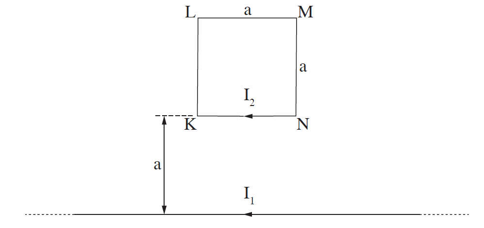
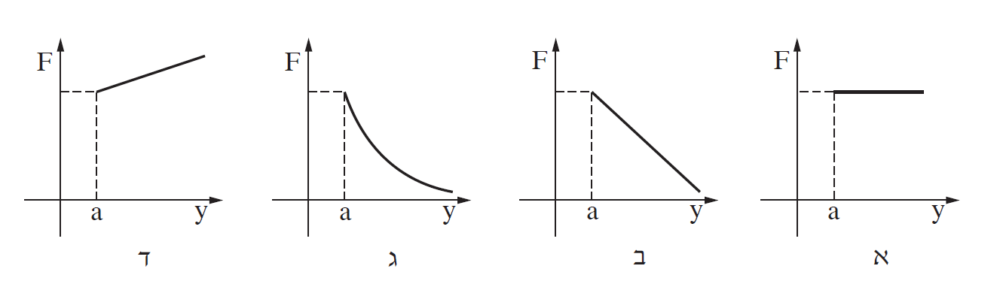

שאלה 4

על שולחן אופקי מונחים כריכה ריבועית KLMN שאורך צלעה a = 0.1m, ותיל שאורכו גדול מאוד ביחס לצלע a. התיל הארוך מקביל לצלע KN, ונמצא במרחק y = a ממנה (ראה תרשים).
בתיל הארוך עובר זרם שעוצמתו I1 = 8A, ודרך הכריכה הריבועית עובר זרם שעוצמתו I2 = 5A.
כיווני הזרמים מוצגים בתרשים.
מצאו את הכוח (גודל וכיוון) שהתיל הארוך מפעיל על הצלע KN של הכריכה. (6 נקודות)
מצאו את הכוח (גודל וכיוון) שהתיל הארוך מפעיל על הכריכה הריבועית כולה. (6 נקודות)
מצאו את הכוח (גודל וכיוון) שהכריכה מפעילה על התיל. הסבירו את תשובתכם. (6 נקודות)
קבעו בלי לחשב, אם גודל הכוח שמפעיל התיל הארוך על הצלע האנכית KL גדול מגודל הכוח שמפעיל התיל הארוך על הצלע KN, קטן ממנו או שווה לו. הסבירו את תשובתכם. (7 נקודות)
מגדילים בהדרגה את המרחק y של הכריכה מן התיל הארוך (כך שהצלע KN נשארת מקבילה לתיל).
איזה מבין הגרפים א-ד שלהלן מתאר נכון את גודל הכוח שהתיל הארוך מפעיל על הכריכה כפונקציה של המרחק y (העלם מזרים במערכת הנוצרים מהשראה אלקטרו-מגנטית)? הסבירו את תשובתכם. (8.33 נקודות)
